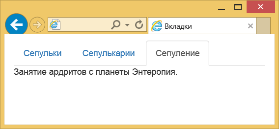
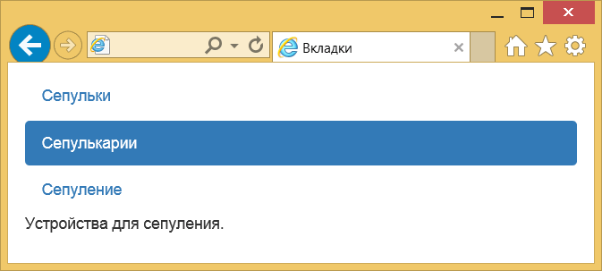

Вкладки
Вкладки как элемент интерфейса пришли из делопроизводства.
В обычные деловые папки вставляют небольшие кусочки картона с надписями, которые позволяют быстро сориентироваться в содержании и перейти к нужному разделу.
На сайтах вкладки применяются там, где требуется компактно и наглядно скомпоновать информацию по блокам.
Переход по вкладкам происходит без перезагрузки страницы, что ускоряет работу и упрощает пользователю жизнь.
Код вкладок состоит из двух частей — это отображение самих вкладок, а также информации с ними связанных.
Вначале создаём список
Важны оба класса, иначе мы не получим желаемый вид.
Каждая вкладка формируется элементом
Текст на вкладках делается с помощью ссылок, для каждой из них следует добавить атрибут data-toggle со значением tab.
Сама ссылка указывает на элемент с идентификатором, который должен отображаться при открытии вкладки.
Вот что в итоге получится.
Даже с этим куцым кодом вкладки должны уже работать и визуально переключаться.
Переходим к выводимому тексту.
Оборачиваем всё элементом
Плюс добавляем уникальный идентификатор, связывающий текст с самой вкладкой.
Последний штрих — для текущей вкладки указываем класс active.
Важный элемент цивилизации ардритов с планеты Энтеропия.Устройства для сепуления.Занятие ардритов с планеты Энтеропия.
Соединяем вместе два фрагмента и получаем итоговый код для создания вкладок.
Результат данного примера:
Плавный переход
Переход между вкладками происходит мгновенно, но можно сделать это с небольшим эффектом, если добавить класс fade к блоку с текстом.
Тогда текст будет плавно исчезать и появляться.
Для активной вкладки обязательно надо включить ещё один класс in, без него возникнут ошибки.
Важный элемент цивилизации ардритов с планеты Энтеропия.Устройства для сепуления.Занятие ардритов с планеты Энтеропия.
Вкладки на всю ширину
Размер вкладки зависит от длины текста в ней, но можно насильно изменить их ширину, чтобы вкладки занимали всё доступную ширину.
Просто добавьте класс nav-justified к элементу
Вид таких вкладок:
